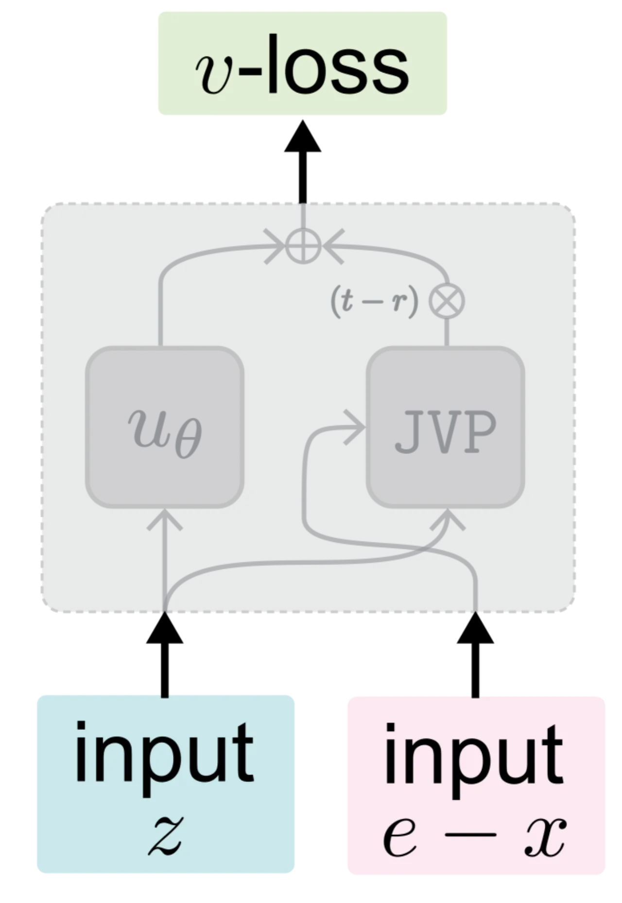
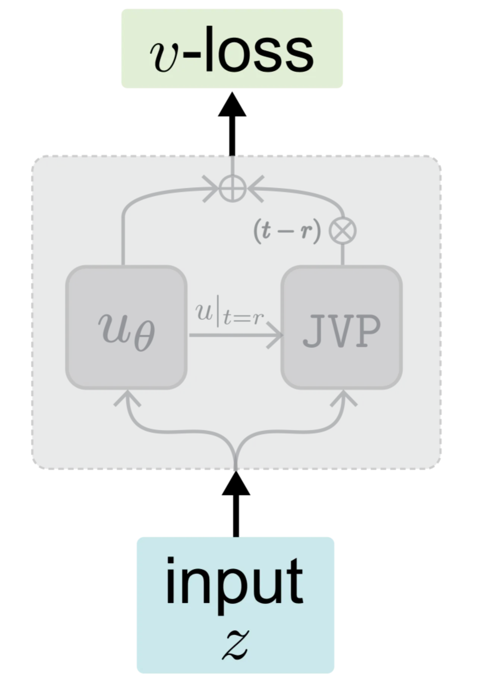
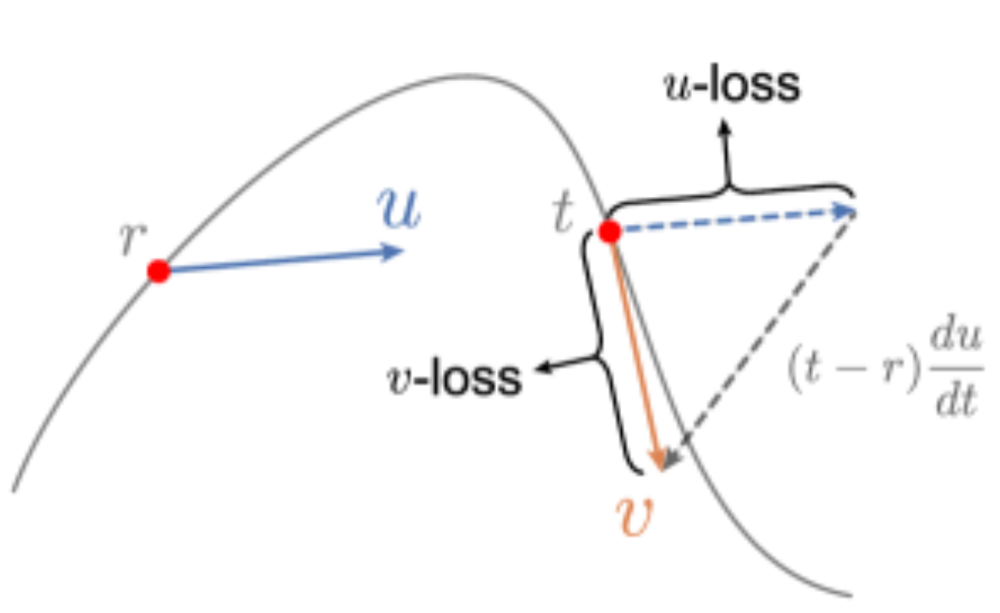
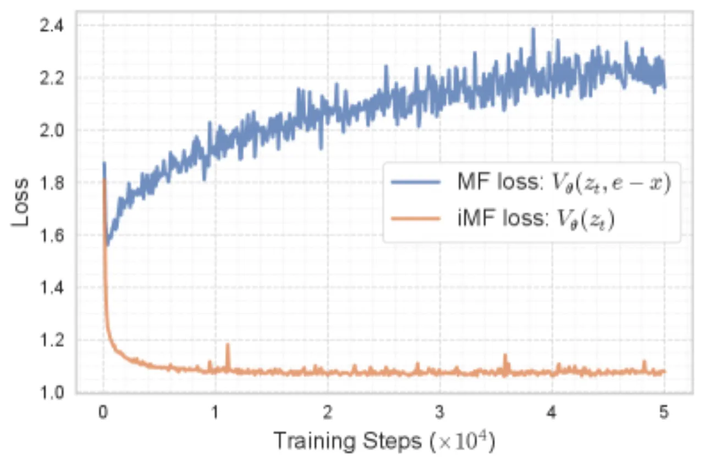
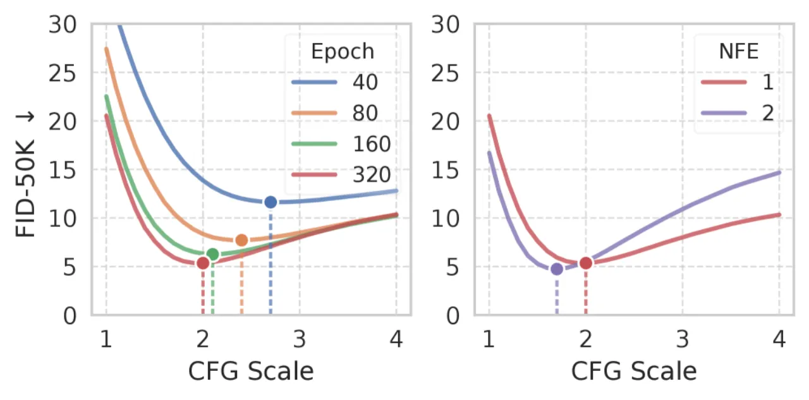
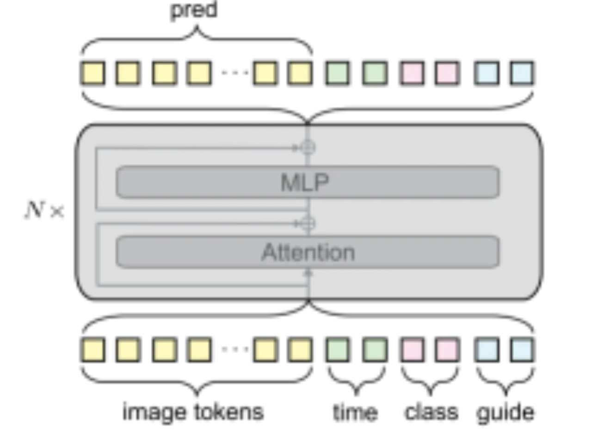
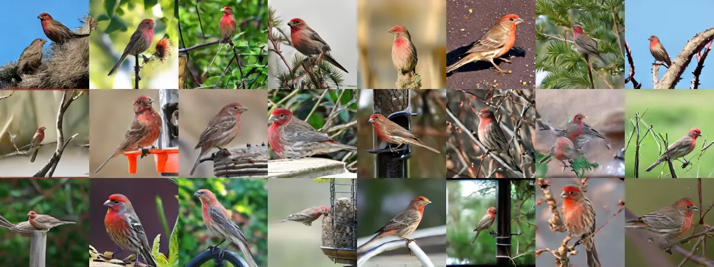

本文系统分析了 MeanFlow (MF) 框架在快速前向生成模型中存在的两大核心挑战：训练目标依赖于网络自身（非标准回归问题），以及推理时 Classifier-Free Guidance (CFG) 尺度固定缺乏灵活性。作者提出了改进版本 iMF，通过将训练目标重构为瞬时速度（instantaneous velocity）损失、引入灵活 guidance 条件化，以及设计轻量级 in-context conditioning，在 ImageNet 256×256 上以单次函数评估（1-NFE）达到 1.72 FID，相比原始 MF 的 3.43 FID 提升约 50%，且无需任何预训练或蒸馏。
快速前向生成模型（fastforward generative models）旨在用极少的函数评估次数（NFE）生成高质量图像。MeanFlow 是这一方向的代表性方法，但原始 MF 存在两个根本性挑战，限制了其性能和使用灵活性。
"原始 MF 的训练目标依赖于网络本身，而非构成一个标准的回归问题。" — 作者对第一个核心挑战的描述
原始 MeanFlow 的目标中含有网络自身的输出，这使得训练目标并非固定的"监督信号"，而是随网络参数变化而变化的移动靶。实验表明，原始 MF 的训练损失不仅存在较大方差，甚至出现不下降的现象（non-decreasing loss）。
原始 MF 在训练时将 Classifier-Free Guidance 的尺度 ω 固定，但实验发现最优 CFG 尺度随模型容量和训练进度而变化（图 4）。固定 ω 导致同一模型无法在推理时灵活调整 guidance 强度，降低了实用性。

iMF 在三个层面对原始 MeanFlow 进行了系统改进：将训练目标重构为 v-loss（velocity loss）、引入灵活的 guidance 条件化、以及用 in-context conditioning 替换参数密集的 adaLN-zero。
原始 MF 的训练目标可以分解为：对平均速度 u(z_t) 的预测，加上一个关于时间导数的修正项。通过引入 MeanFlow 恒等式，可以将目标重写为对瞬时速度 v(z_t) 的回归：
其中 JVP（Jacobian-Vector Product）在 stop-gradient（sg）下计算，确保训练目标仅依赖当前输入 z_t，而与网络参数无关，构成合法的监督回归。
论文提出两种实现方式：Boundary condition（令 v_θ = u_θ(z_t, t, t)，无额外参数）和 Auxiliary head（独立的 v-head，共享主干参数，效果更优）。


实验发现，最优 CFG 尺度随模型大小和训练轮次显著变化（图 4），固定 ω 使得原始 MF 在不同推理场景下性能受限。
解决方案：将 guidance 尺度 ω 作为显式条件变量，在训练时从分布中采样（偏向较小值以稳定训练），使单个模型在推理时支持任意 CFG 尺度。论文进一步扩展为 Ω = {ω, t_min, t_max}，额外支持 CFG 的应用区间控制。

原始 DiT 使用参数密集的 adaLN-zero 来融合条件信息。iMF 改用多 token 的 in-context conditioning：每种条件（时间步 r, t；类别 c；guidance 因子 Ω）转化为若干可学习 token，与图像 token 拼接后统一送入 Transformer。
配置：类别条件用 8 个 token，其余条件各用 4 个 token。这一设计在 Base 规模上将参数量从 133M 减至 89M（减少 33%），同时 FID 进一步提升。

所有实验在 ImageNet 256×256 上进行，使用 FID 作为主要评价指标，NFE（Number of Function Evaluations）衡量生成效率。基线为原始 MF 及其他快速生成模型。
通过逐步叠加各项改进，验证每个组件的独立贡献：
| 配置（iMF-B/2，640 epoch） | FID ↓ | 说明 |
|---|---|---|
| 原始 MF（无 CFG） | 32.69 | 基线 |
| + v-loss（boundary condition） | 29.42 | 改进 3.27 |
| + auxiliary head + CFG | 5.68 | 引入 CFG，大幅提升 |
| + ω-conditioning | 5.52 | 灵活 guidance（边际改进） |
| + Ω-conditioning（含 CFG 区间） | 4.57 | 提升 0.95 |
| + In-context conditioning（89M） | 4.09 | 减少 33% 参数，FID 提升 |
| + 改进 Transformer 结构 | 3.82 | 进一步优化 |
| 完整 iMF-B/2（640 epochs） | 3.39 | 最终 Base 模型 |
| 模型 | 参数量 | NFE | FID ↓ |
|---|---|---|---|
| MF-B/2（原始） | 131M | 1 | 6.17 |
| iMF-B/2 | 89M | 1 | 3.39 |
| iMF-M/2 | 174M | 1 | 2.27 |
| iMF-L/2 | 409M | 1 | 1.86 |
| iMF-XL/2 | 610M | 1 | 1.72 |
| iMF-XL/2（2-NFE） | 610M | 2 | 1.54 |
| 方法 | 类别 | 参数量 | NFE | FID ↓ |
|---|---|---|---|---|
| MF-XL/2（原始 MeanFlow） | 从零训练 | 675M | 1 | 3.43 |
| α-Flow-XL/2+ | 从零训练 | 676M | 1 | 2.58 |
| FACM-XL/2 | 蒸馏 | 675M | 1 | 1.76 |
| iMF-XL/2 | 从零训练 | 610M | 1 | 1.72 |
| DiT-XL/2（多步参考） | 多步 | 675M | 250 | 2.27 |
| DDT-XL/2（多步参考） | 多步 | 677M | 250 | 1.26 |
iMF-XL/2 以 1.72 FID 超越了所有现有的蒸馏方法（FACM-XL/2 为 1.76），且无需任何预训练或蒸馏，同时参数量更少（610M vs 675M）。甚至超越了多步方法 DiT-XL/2（250 NFE，2.27 FID）。


在 Ω-conditioning 训练完成后，若将 guidance 尺度固定为 ω=1.0（即不使用 CFG），灵活 guidance 模型的 FID 为 20.95，而未经 Ω-conditioning 训练的对应模型为 30.76。这说明灵活 guidance 的训练机制本身对学习表示质量有正向迁移效果，即便在推理时不使用 CFG 也受益。
论文原文指出："随着 1-NFE 生成的显著进步，tokenizer 在推理时产生的开销变得不可忽视（the use of a tokenizer begins to incur a non-negligible cost at inference time）"。在单步生成成为主要瓶颈被攻克后，图像编解码器的耗时占比相对上升。作者期待未来研究探索更高效的 tokenizer 或直接在像素空间进行生成。
iMF-XL/2 模型有 610M 参数，需要在 ImageNet 上训练数百个 epoch。虽然无需预训练，但完整的从零训练过程对计算资源要求依然较高。论文未提供训练所需 GPU 小时数等具体信息。
所有定量实验均在 ImageNet 256×256 类别条件生成上进行。对于文本条件生成（text-to-image）、更高分辨率（如 512×512 或更高）以及其他数据集上的泛化能力，论文未作评估，方法在这些设置下的适用性有待验证。
v-loss 重构中使用了 Jacobian-Vector Product (JVP) 来计算时间导数，这在训练时引入了额外的计算开销（相当于一次额外的前向传播），可能增加每步训练时间。论文未明确量化这一开销的影响。